Serving as the centralized brain of the robot, the Torch Motion Controller (running on a Raspberry Pi 5) is a high-performance interpreter custom-built from the ground up for additive manufacturing. It operates through two distinct execution pipelines:
STL File →
ToM Slicer → ToM Code →
Controller. The controller parses the
instructions and dynamically translates Cartesian trajectories into precise motor
pulses and orchestrates real-time serial communication with the weld triggers.
By bypassing conventional generic G-code limitations, it utilizes a specialized execution
loop categorized into configuration (set), timing (wait), and
execution (torch) states, natively computing advanced trapezoidal velocity
profiles.
Leveraging the high deposition rates and material efficiency of Wire Arc Additive Manufacturing (WAAM), this system was developed to autonomously repair damaged railway tracks. By integrating a continuous welding arc with precise robotic kinematics, the system deposits 3D metal structures layer by layer.
This approach solves critical rail maintenance challenges by replacing manual interventions with a fully automated, closed-loop repair pipeline, ensuring superior bead geometry and consistent metallurgical integrity.
At the core of the physical execution is a custom-engineered, CNC-based 3-axis Cartesian robot, developed for an MSME-funded project under the guidance of Dr. Vikranth Racherla, professor and Head of Center for Railway Research at IIT Kharagpur. The robot boasts a modular end-effector architecture capable of autonomous Laser profilometry, selective WAAM repair, and mechanical post-processing
To achieve industrial-grade deposition, the architecture integrates seamlessly with standard Metal Inert Gas (MIG/GMAW) welding power sources. Transforming a manual welder into an autonomous manufacturing tool required engineering a custom relay-based controller.
This interface taps directly into the welder's trigger circuit, enabling microsecond-precision arc activation synchronized with multi-axis robotic movements. This tight hardware integration unlocks the ability to execute complex, multi-pass deposition strategies flawlessly.
To overcome the limitations of standard CNC programming in welding environments, I architected ToM (Torch Motion) Code—a proprietary, domain-specific path language. Unlike generic G-code which relies on obscure letter-number combinations (like G0, G1, M104), ToM code uses human-readable, explicit keywords tailored specifically for Wire Arc Additive Manufacturing (WAAM).
This semantic design elegance abstracts the immense complexity of synchronized multi-axis kinematics and arc state management into a highly intuitive syntax, drastically reducing the learning curve and making manual program adjustments on the shop floor effortless.
set home: Sets the current physical location as the absolute zero
reference.set mvel10 svel5: Establishes the motion velocity (mvel) and slow
velocity (svel) in mm/s.torch move: Commands linear Cartesian trajectories (e.g.,
torch move x100e y50e mvel).
torch wa / torch wua: Explicitly toggles the Weld Arm
active (arc ON) or inactive (arc OFF), maintaining perfect synchronization with
the axes.wait 2s).Below is a sample of our proprietary ToM Code translating directly into simulated trajectories:
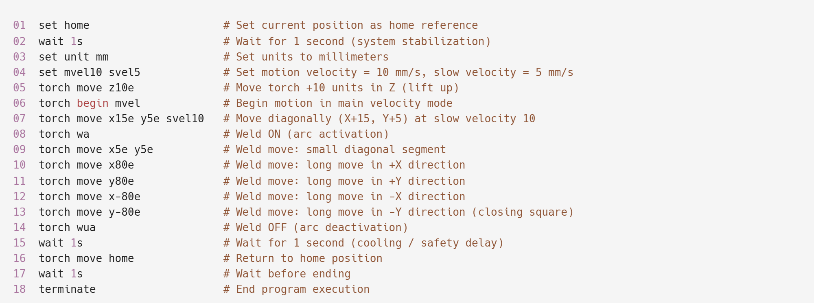
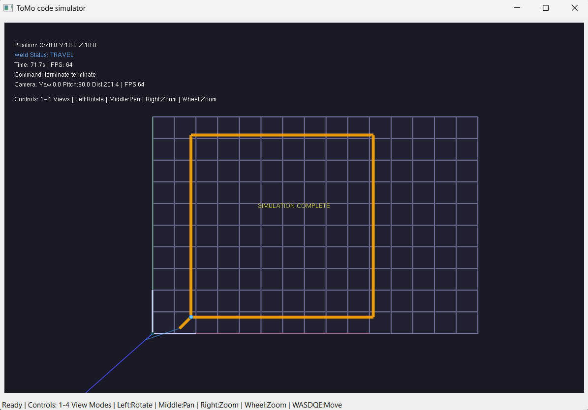
A major advantage of the Torch Motion controller is its direct interaction with hardware
through the explicit encoder unit method. Rather than relying purely on floating-point
millimeter coordinates which can suffer from rounding errors during microcontroller
translation, ToM code commands utilize explicit encoder formats denoted by the
e suffix.
By defining the system resolution—for instance,
set res 1e 1.0 (1 encoder unit = 1 mm)—ToM code elegantly maps physical
distances to precise motor pulses based on hardware properties.
Formula: Motor Pulses = Target Distance × (PPR / Lead)
If a target distance is 50 encoder units (e.g., 50 mm), the host PC
pre-calculates the exact motor steps:
Pulses
= 50 × (Pulses/Rev ÷ Lead)
For negative trajectories designated by an n prefix, such as
xn50e, the microcontroller doesn't receive a negative float. Instead, it
receives the absolute pulse count along with an explicit DIR pin
command (e.g., CCW) to instantly reverse the motor direction.
By pre-calculating the exact number of motor steps on the host PC and passing integers directly to the microcontroller, we shift the computational burden off the embedded hardware. This ensures perfectly deterministic and repeatable robotic positioning with zero-latency operation, a critical requirement for maintaining high-quality, stackable weld bead geometries.
The ToM Slicer is a robust Python-based desktop application engineered to translate complex 3D STL geometries directly into executable ToM Code. Unlike standard thermoplastic slicers, this pipeline is fundamentally optimized for the metallurgical realities of Wire Arc Additive Manufacturing (WAAM).
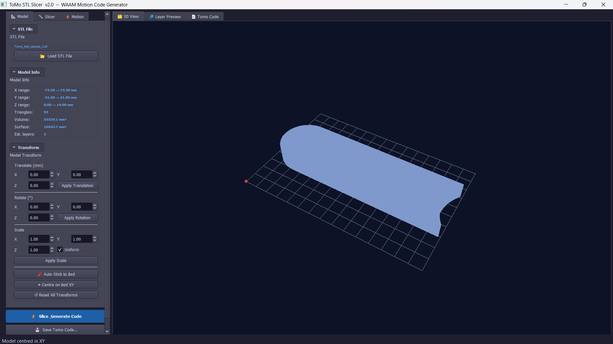
The core geometry of the build is governed by specific deposition parameters extracted from empirical data. The UI allows users to directly set these constraints:
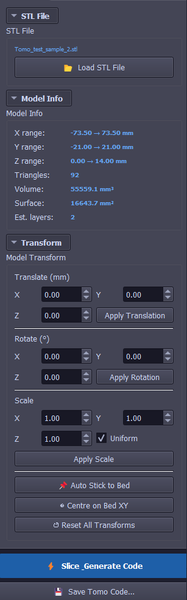
Once parameters are set, the engine slices the STL by intersecting planes with the mesh
triangles. It uses the shapely library to robustly offset polygons inward by
half a bead width, ensuring the weld centerline stays within the part's footprint. The
resulting contours and infill lines are stitched into continuous toolpaths to minimize
unnecessary arc-offs.
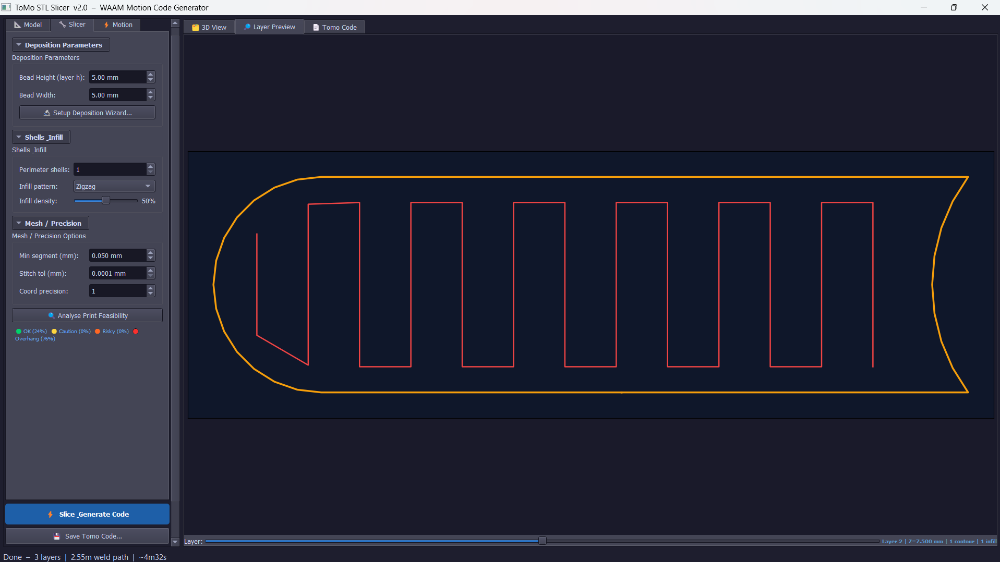
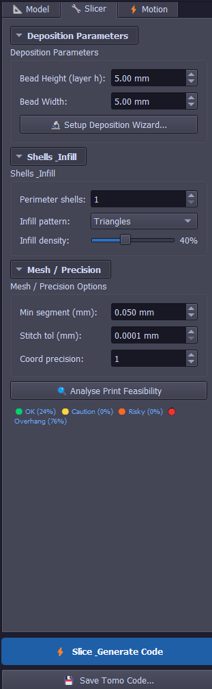
Unlike plastic extrusion, WAAM requires precise thermal management and gas control. The ToM Slicer injects these critical timings natively into the code:
mvel,
svel): Independent velocities for active deposition versus
non-welding rapid moves.The final output of the Slicer is the compiled ToM Code sequence. The engine constructs the
program block by block—initializing the environment, executing X/Y travel, commanding the
arc triggers, and incrementing the Z-axis. Negative coordinates are automatically encoded
(e.g., xn12.5e) to map directly to hardware directional pins, maintaining
strict deterministic execution.
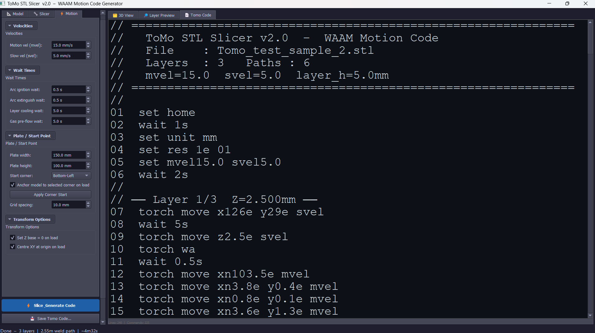
To eliminate the risk of hardware crashes and material waste, I engineered a comprehensive Digital Twin using PyQt5 and PyOpenGL. This desktop application acts as a virtual proving ground, parsing the exact ToM Code instructions destined for the physical robot and rendering the outcomes a priori.
The simulation engine is composed of several discrete physics and hardware modeling modules to mirror the real world perfectly:
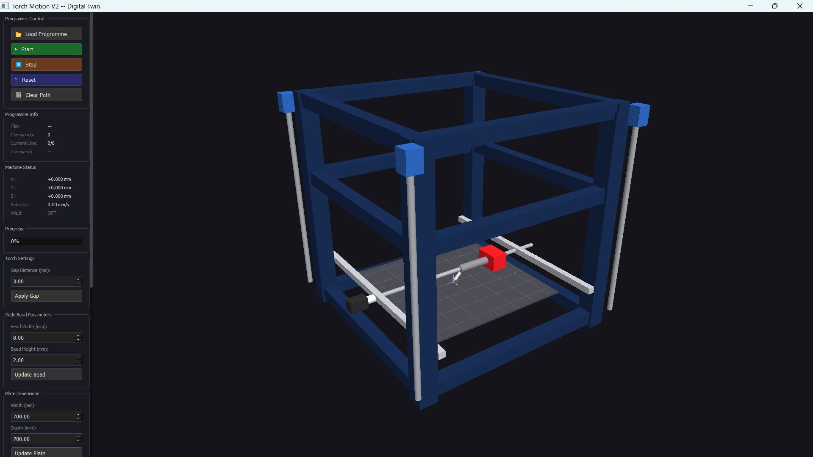
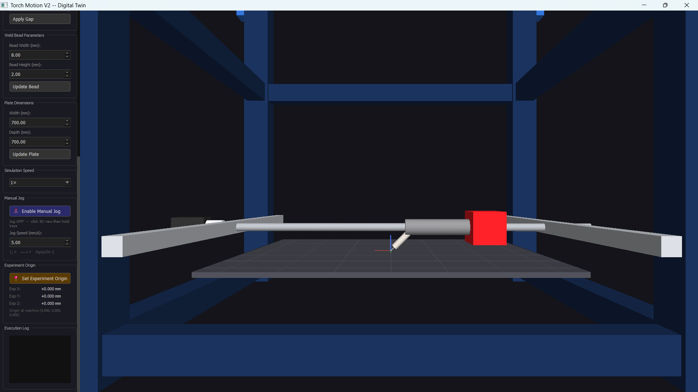
The digital twin provides a seamless UI for loading and validating proprietary `.txt` Tomo programs. Operators can set specific parameters like the baseline Z gap distance before triggering the simulation.
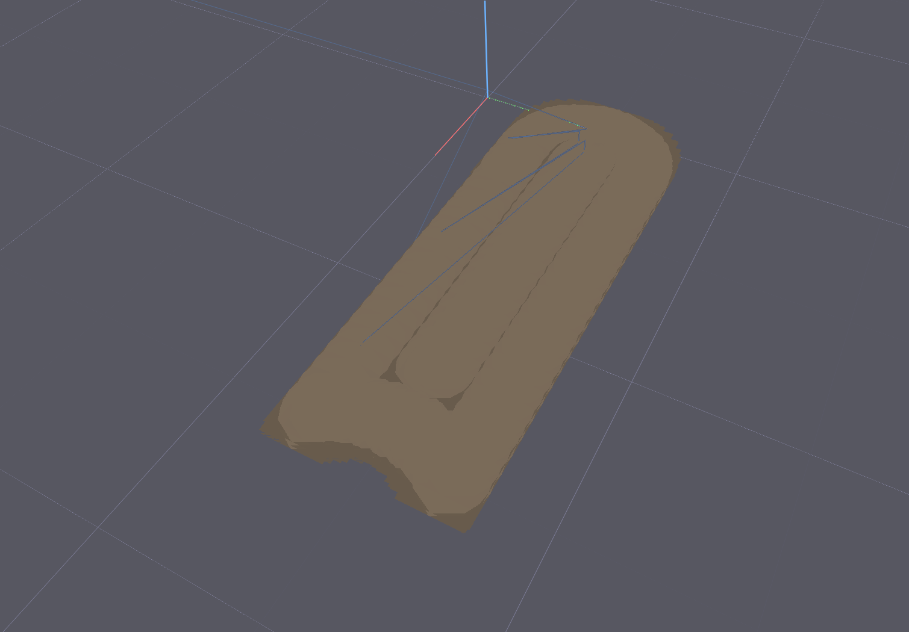
Watch the Digital Twin parse a complex multi-layer deposition strategy and drive the URDF kinematics in real-time. (Shown at 20x simulation speed)
To bridge the gap between theoretical software models and real-world manufacturing, I conducted over 250 rigorous empirical deposition experiments. By systematically manipulating key process variables, I generated a comprehensive dataset mapping machine states directly to metallurgical geometries. Below is a sample snippet of the recorded process parameters and resulting bead dimensions:
| Exp No. | Current (A) | Voltage (V) | Velocity (mm/s) | WFR (m/min) | Bead Width (mm) | Bead Height (mm) |
|---|---|---|---|---|---|---|
| 1 | 180 | 26.5 | 4.0 | 7.0 | 8.18 | 1.83 |
| 2 | 180 | 26.5 | 3.0 | 7.0 | 2.23 | 2.94 |
| 3 | 180 | 26.5 | 6.0 | 7.0 | 6.56 | 2.66 |
| 4 | 180 | 26.5 | 8.0 | 7.0 | 7.43 | 2.67 |
| 5 | 190 | 27.2 | 4.0 | 7.0 | 9.62 | 3.09 |
Before initiating a live arc, physical hardware dry runs were conducted using the exact
motion sequences generated by the ToM Slicer. This crucial step validates the deterministic
e encoder mappings on the physical gantry, ensuring toolpath integrity and
collision avoidance without risking a catastrophic burn-through on the print bed.
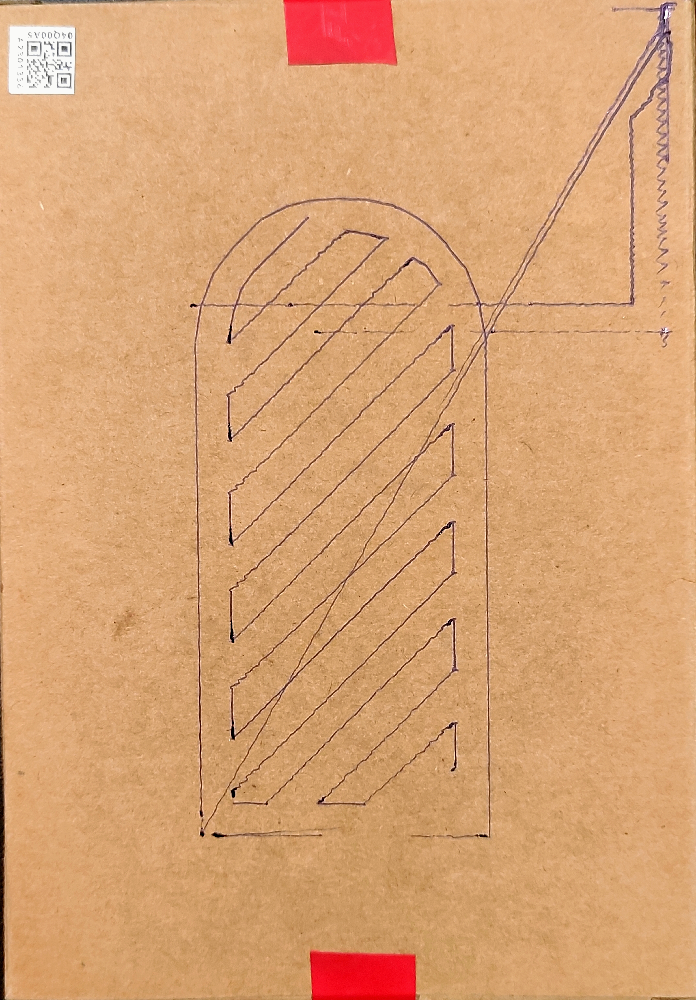
Moving beyond single beads, the system's true capability lies in overlapping layers to construct dense 3D volumes. By feeding back the empirical bead dimensions into the slicer, the system calculates precise step-over offsets, preventing underfill gaps or excessive material pile-up during complex multi-pass trajectories.
Note: Detailed results of several other advanced metallurgical and stress-strain experiments are currently confidential and proprietary.
To process thousands of weld cross-section images efficiently, I developed an optimized, headless Python pipeline capable of Batch processing. It recursively iterates through complex folder hierarchies, managing memory via targeted image caching rather than redundant disk I/O.
The processing architecture follows a strict, deterministic 5-stage protocol for every captured image:
A critical algorithmic challenge in automated laser profilometry is dynamically identifying the flat reference plate directly beneath the weld bead, especially when the plate itself may be angled or distorted. The algorithm applies a 1D Gaussian filter to smooth out noise in the raw pixel profile array Ypx, computing the smoothed dataset: Ysmooth = G(Ypx, σ).
By computing the discrete numerical derivative ΔYsmooth, the algorithm robustly isolates "spikes" (weld contours) and "flats" (the reference plate) by thresholding the slope gradient. Continuous flat segments are clustered together, and an averaged reference depth is established dynamically, making the system highly robust against imperfect physical camera alignment.
To achieve maximal optical precision, the thick, bloomed laser line is mathematically reduced to a single-pixel skeleton utilizing a weighted average of intensity distributions across each pixel column. Rather than naively picking the absolute brightest peak, the true center is interpolated:
ycenter = Σ ( yi × Ii ) / Σ Ii
Where yi is the row coordinate index and Ii is the local pixel intensity, yielding reliable sub-pixel accuracy that neutralizes unpredictable beam dispersion.
The core objective of the entire profilometry system is to autonomously supply high-quality training data for the downstream neural network models. The pipeline was designed specifically to cross-reference the extracted geometric measurements with the initial Design of Experiments (DOE) matrix without human intervention.
Upon completing the final image extraction batch, the algorithm matches the physical independent variables (Current, Voltage, Welding Speed) directly with the averaged physical outcomes (Peak Bead Height, Average Bead Width) to instantly generate a master comprehensive CSV.
weldment_no, Current, Voltage, Welding_speed,
Avg_Bead_Height, Avg_Bead_Width
1, 180, 26.5, 4.0, 1.8341, 8.1820
2, 180, 26.5, 3.0, 2.9430, 2.2351
3, 180, 26.5, 6.0, 2.6640, 6.5620
...
Direct side-by-side comparison showcasing the physical weld deposition structure and its corresponding digital laser-extracted geometric profile interpretation.
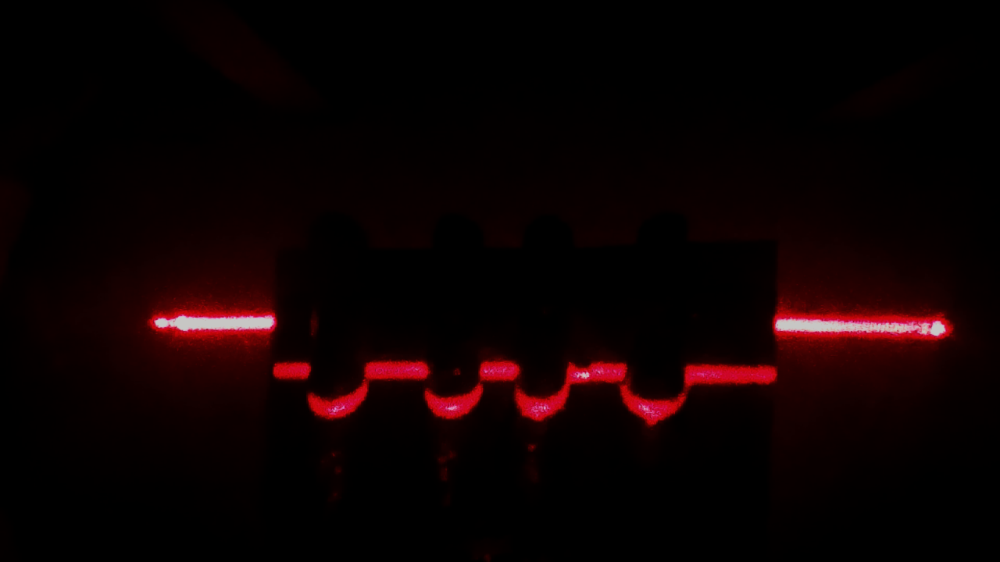
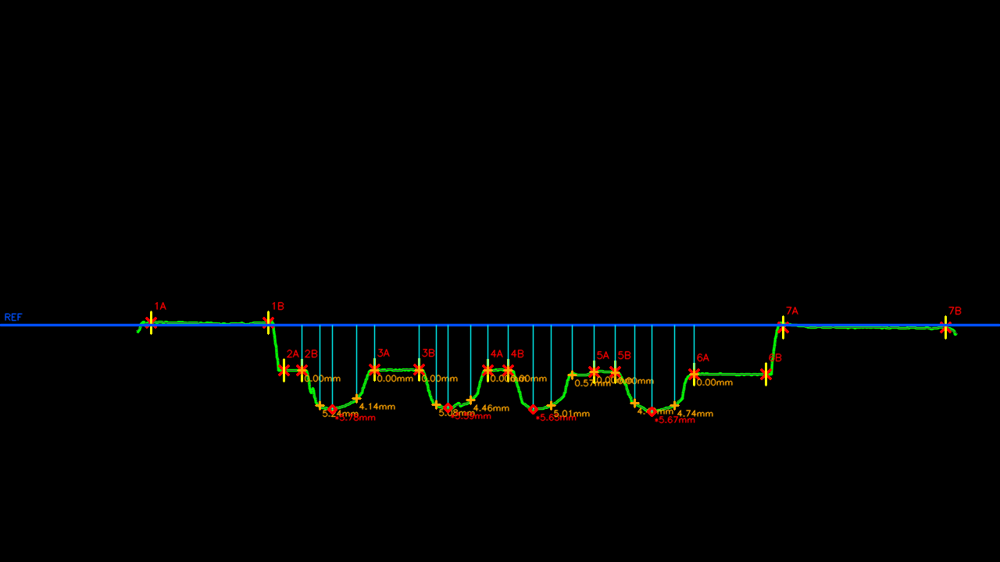
The foundational step in the sim-to-real pipeline was designing the physical constraints and mass properties of the bicopter test rig. I used CATIA V5 for the mechanical design and assembly, ensuring accurate placement of the motors, propellers, and the MPU6050 IMU sensor.
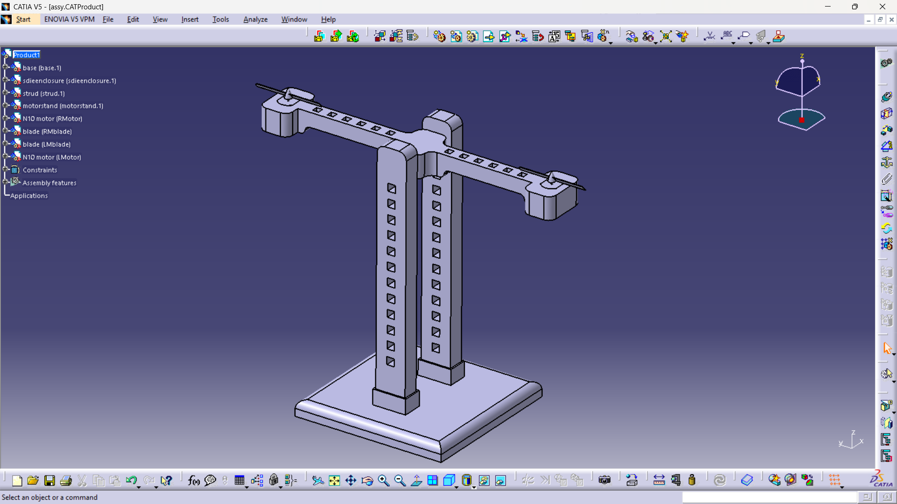
To accurately simulate the physics, I authored the URDF model. The Universal Robot Description Format (URDF) defines the robot's physical constraints:
<link>) with
highly precise mass tensors (ixx, iyy, izz) imported directly from CAD. For
example, the base link weighs exactly 108 grams.<joint type="continuous"> allowing infinite rotation on
the Z-axis, while the motor stand is mounted on a revolute joint with
defined effort and velocity limits to simulate realistic physical resistance and
damping.<collision>) encapsulate the complex visual
meshes (<visual>) to ensure the physics engine operates at maximum
framerate without calculating complex mesh intersections.The URDF was imported into NVIDIA Isaac Sim to create a high-fidelity digital twin powered by the deterministic PhysX engine. Rather than risking hardware damage on a physical test rig, I developed a Python-based flight controller using the Omniverse API to tune the PID loop virtually.
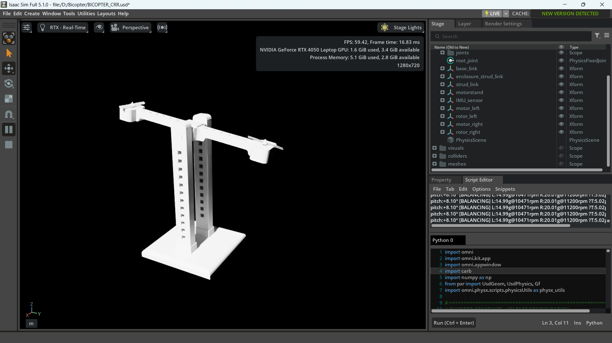
The simulation goes beyond simple rigid-body kinematics; it is thermodynamically and electrically accurate. The control logic actively computes real-world motor constraints, including voltage drops across the L298N motor driver (typically ~2.0V loss) and non-linear thrust curves where thrust scales exponentially with duty cycle.
In practice, the Python controller runs a high-frequency loop that reads the simulated IMU pitch angle and compares it to a 0° setpoint. The resulting error is fed into a custom PID algorithm featuring integral anti-windup. This prevents the integral term from accumulating massive errors when the simulated motors saturate at their maximum RPM. The calculated compensatory thrust is then dynamically applied to the continuous rotor joints, allowing for safe, real-time tuning of the Kp, Ki, and Kd constants without the risk of destroying physical propellers.
The optimal PID constants (Kp, Ki, Kd) derived from this simulated controller were recorded and successfully deployed to the physical system.
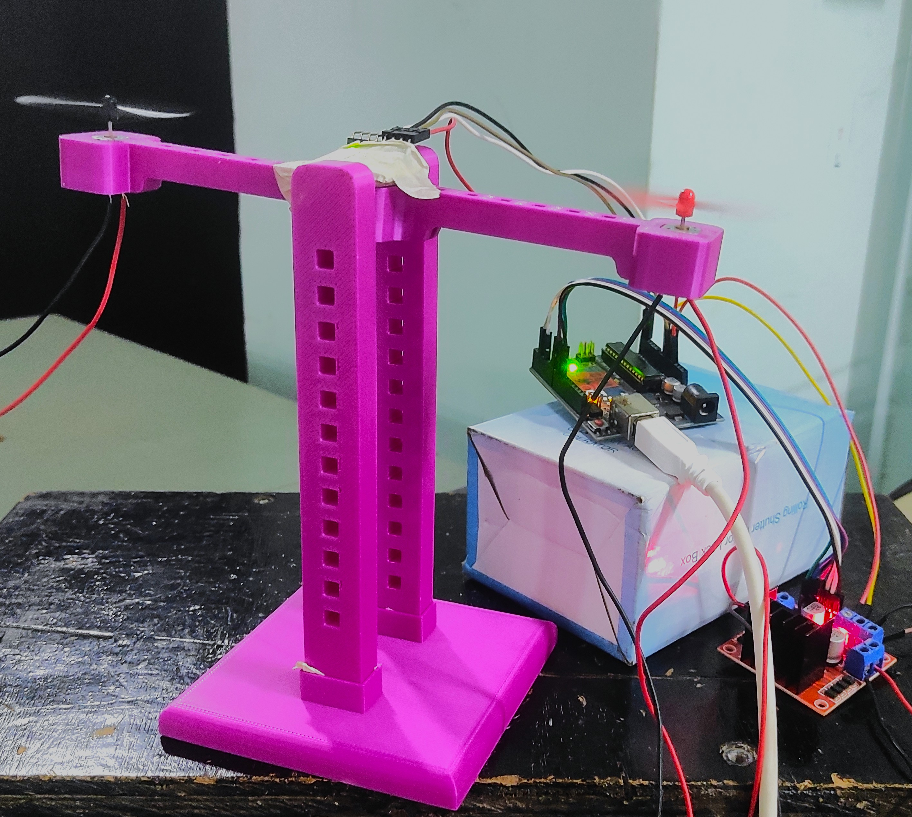
With the PID parameters successfully base-lined in the NVIDIA Isaac Sim digital twin, the control architecture was ported from high-level Python APIs to highly optimized, bare-metal C++ for deployment on an Arduino Uno microcontroller.
Unlike the simulation environment which relies on floating-point timestamps, the
physical hardware demands deterministic execution. The firmware employs a strict
250Hz hardware timing loop (4000 µs) utilizing the Arduino's internal
micros() timer. This guarantees that the Integral and Derivative
calculations in the PID loop process delta-time with absolute precision.
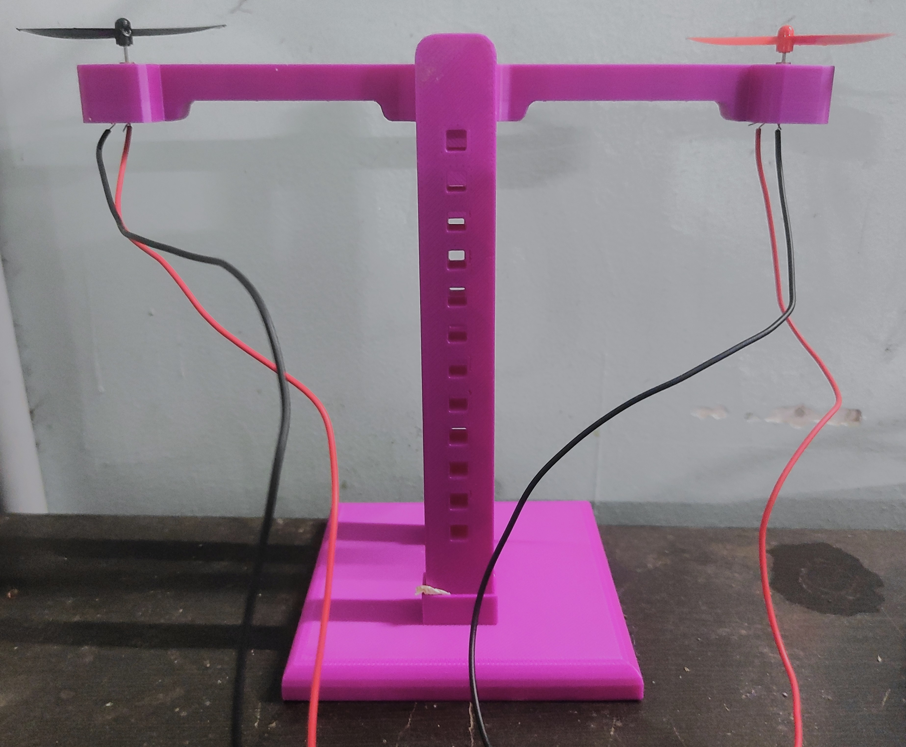
Real-world hardware introduces significant electrical and mechanical noise. The physical rig relies on an MPU6050 6-DOF IMU communicating over a 100kHz I2C bus. To counteract the intense mechanical vibration generated by the brushed DC motors, a deterministic Complementary Filter was implemented, extracting a pristine Euler pitch angle free of mechanical jitter.
For actuation, the control signals are mapped to an L298N Dual H-Bridge Motor Driver. The 8-bit PWM outputs from the Arduino are linearly scaled to drive the high-current DC motors. Because the motors have a non-linear thrust curve, deadband compensation was written into the mixer logic to ensure minute PID corrections immediately result in thrust changes.
A comprehensive visual representation of the end-to-end development pipeline from mechanical conceptualization to physical deployment.
In traditional robotics, software developers must wait for hardware fabrication. This sim-to-real workflow enables 100% concurrent development. While the 3D-printed chassis and L298N circuits were being physically assembled, the flight control logic was already being verified virtually.
Crucially, this isolates logical bugs from hardware flaws. If the digital twin crashes, it's a mathematical error. If the physical rig crashes after the twin succeeds, it definitively points to real-world anomalies like sensor noise.
The digital twin provides perfect floating-point "Ground Truth" Euler angles with zero latency. The physical MPU6050, however, suffers from severe mechanical vibration from the brushed DC motors, transmitting noisy data over a bandwidth-limited I2C bus.
To bridge this gap, a Signal Processing Layer was engineered. A deterministic Complementary Filter fuses high-frequency Gyroscope rates with low-frequency Accelerometer vectors, effectively masking mechanical noise.
The simulation environment executes via high-level Python APIs running on a heavy GPU workstation. In contrast, the physical rig operates on bare-metal C++ executing on a 16MHz Arduino microcontroller.
Maintaining architectural parity required careful scaling of math operations. The virtual PID constants were mathematically mapped from the simulation's variable time-step to the Arduino's rigid 4000µs timer loop to ensure identical transient responses.
Predicting process parameters directly from a desired geometry is mathematically an "Ill-Posed Inverse Problem". Multiple parameter combinations (e.g., High Current + High Speed vs. Low Current + Low Speed) can yield the exact same bead width. When a standard ML model sees one input mapping to multiple correct outputs, it averages them out, leading to catastrophic failure.
To solve this, I built a highly accurate Forward Predictor. This Digital Twin uses a Hybrid Physics-ML Architecture. The foundation is the analytical Rosenthal Heat Source Equation, which computes the theoretical 3D thermal gradient of the moving melt pool. However, pure analytical models fail to capture chaotic molten fluid dynamics (Marangoni convection) and non-linear arc physics.
To bridge this gap, I implemented a Machine Learning Residual Corrector that learns the exact delta between the theoretical thermal physics and the final physical bead geometry. I synthesized a 500-sample industrial dataset and upgraded the architecture to actively ingest Contact Tip to Work Distance (CTWD) and Plate Interpass Temperature sensors.
By forcing the ML to understand I2R Joule heating from wire stick-out and thermal accumulation from multi-pass welding, the twin achieves a phenomenal validation R² of 0.9856 for width and 0.9425 for height, entirely eliminating the "black-box" nature of standard neural networks.
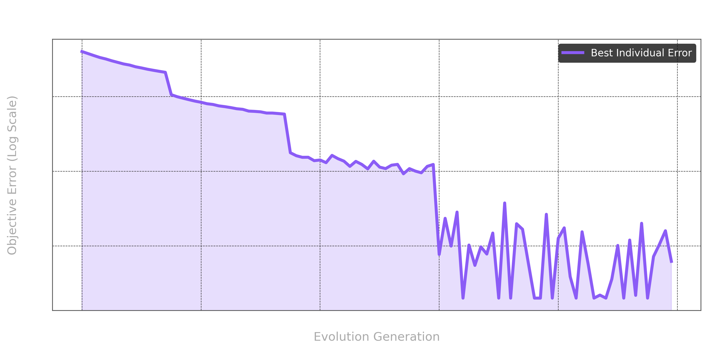
With an accurate Digital Twin in place, the second engine of the system is the Genetic Algorithm Optimizer (utilizing Differential Evolution). Because the welding design space is highly non-convex, standard gradient descent methods fail. Instead, the GA simulates thousands of parameter combinations through the Digital Twin, rapidly "evolving" the inputs (Current, Voltage, Velocity) to converge on the target geometry.
Crucially, because the inverse problem is non-unique, I engineered an Efficiency Penalty into the objective function. In welding metallurgy, excessive Heat Input (Q = ηVI / v) causes severe plate distortion, residual stress, and weakened grain structures.
When multiple parameter combinations yield the exact same bead dimensions, the algorithm mathematically favors the solution that minimizes Current (reducing heat input and power consumption) while maximizing Travel Speed (increasing production throughput). This guarantees the output is not just a valid geometric match, but the absolute optimal thermodynamic and economic operating point for the factory.
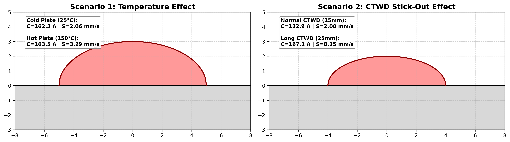
To prove the system's industrial viability, I ran the Genetic Algorithm through two distinct scenarios to observe how it mathematically adjusts to varying shop floor constraints.
Target Bead: Width=10.0mm, Height=3.0mm
Cold Plate (25°C): C=162.3A, S=2.06 mm/s
Hot Plate (150°C): C=163.5A, S=3.29 mm/s
Physics Insight: The base material is hot and readily accepts the weld. If the robot moved at the slow 2.06 mm/s, the hot bead would flatten out and become too wide. The optimizer correctly deduced it must increase travel speed by 60% to hit the exact same geometry.
Target Bead: Width=8.0mm, Height=2.0mm
Normal CTWD (15mm): C=122.9A, S=2.00 mm/s
Long CTWD (25mm): C=167.1A, S=8.25 mm/s
Physics Insight: When the wire sticks out further (25mm), it undergoes heavy resistance heating and melts off rapidly. To keep the height down to exactly 2.0mm, the Digital Twin figured out that the robot must sprint at 8.25 mm/s so the wire doesn't pile up.
These tests confirm the system is no longer just curve-fitting numbers; it is predicting thermodynamics. It successfully identifies viable parameter configurations that human operators or standard ML models fail to map, proving its readiness for closed-loop real-world integration.